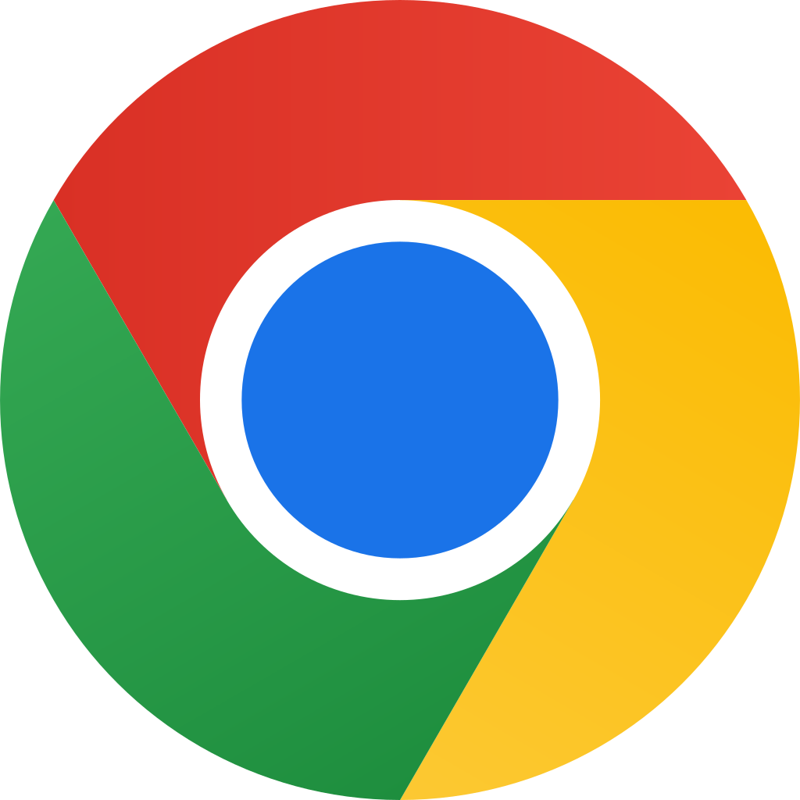

Section
The Different Clicks
What is a click?
When you press a button on a mouse, it is known as a click. There are three different types of clicks. Like everything else to do with computers, each type of click might do something different depending on the situation.
Left Click
The Left Click (also described as just a click) is a single click of the mouse's left button. The left click is commonly used to select files and folders in Windows, or open a weblink on a webpage.
Double Click
The Double Click is two clicks in quick succession of the mouse's left button. The double click is usually used to open files and folders in Windows.
Double clicking can be challenging for people who have health conditions affecting the hands or wrists, or who do not have steady hands. This is because the mouse has to remain still between the clicks. One alternative to double-clicking is to click once on your target and then press the Enter Key.
Right Click
The Right Click is a single click of the mouse's right button. The right click is usually used to open a menu (a list of options) for a particular file, folder, or link.
Scroll
The Scroll isn't quite a click, but the rolling of the mouse's middle button. When you scroll your mouse, you will scroll the content of a webpage or document up or down. Scrolling up (rolling the mouse wheel away from you) scrolls the content up; scrolling down (rolling the mouse wheel towards you) scrolls the content down.
Section
Left Clicking
What is a Left Click?
When you click your left mouse button once, it is known as a left click, or just a click. Left clicking is also just known as clicking, and clicking does different things depending on what you are clicking on. For example, if you click a file, app, or folder in Windows, you will select it.
What is Selecting?
In Windows, you can select icons. When you select an icon, you can then do other things with it, such as rename it, copy it, or delete it. When an icon is selected, usually it changes colour slightly to indicate it has been clicked on.
Try selecting on the icons below, observe what happens to them when they are clicked.

Google
Chrome
Microsoft
Word
My
Documents

Selecting Icons
Clicking on weblinks
When navigating a webpage, weblinks only need a single click to open them (not a double click). Try clicking on the weblinks below.
Mini Web Site 1
This is a mini-webpage with a link to take you to another page. This link only needs a single click to open. Why don't you try the link now?
Click this link...Mini Web Site 2
This is another mini-webpage with another link. This link looks like a button, but it works in the same way as other weblinks so it only needs a single click to open. Give it a try!
Click this link...Clicking Weblinks
You should now have a good idea of when to click and how to click. In the next section, you'll learn about double-clicking and right-clicking. When you are ready, click the link below to move on.